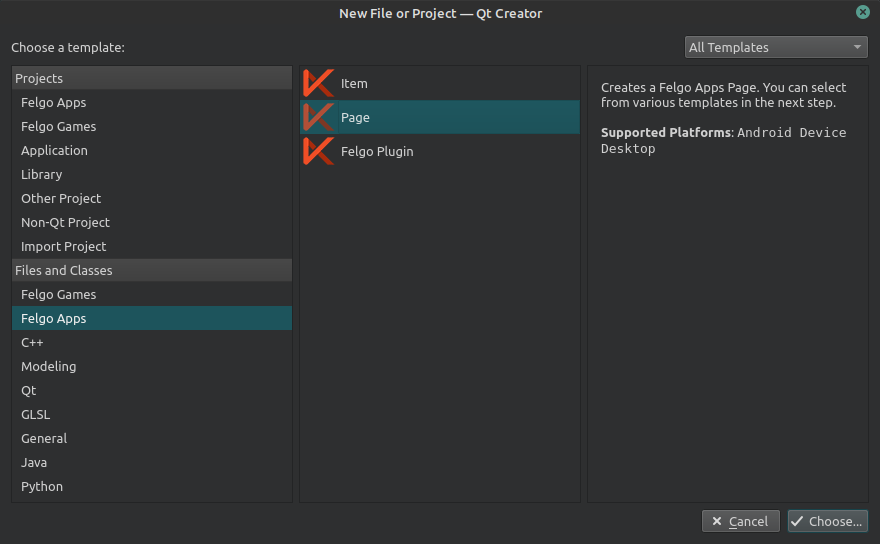

In the previous step we created new Felgo Basic Application. The SDK has generated couple of files, which building them, results in a simple TO-DO application. From the Project Source Tree in Qt Creator, we can see the following files:

As we can see, Felgo generated great amount of code, as example application. Some of the files we can keep and reuse for our application logic. The files that are deleted are:
- ViewHelper.qml
- LoginPage.qml
- ProfilePage.qml
- TodoListPage.qml
- TodoDetailPage.qml
Also related code from other QML files, referencing components, IDs and methods are also removed. Only the basic App layout, pages and RestAPI code is kept for now. We will update it accordingly in next steps.
Adding new Pages
From the main QtCreator menu, we select New File or Project, and from the showed window, we select, Files and Classes section -> Felgo Apps -> Page and click Choose.

For file name we set PlaylistPage, and finish the process. This page will hold all podcast episodes that we want to listen in ordered way. We define the following initial code for new PlaylistPage
import QtQuick 2.0 import Felgo 3.0 Page { title: "Playlist" }
In a same way we create 4 more pages that will be used:
- ExplorePage.qml - List podcasts for exploring
import QtQuick 2.0 import Felgo 3.0 Page { title: "Explore Podcasts" }
- MediaPlayerPage.qml - Central MediaPlayer
import QtQuick 2.0 import Felgo 3.0 Page { title: "Media Player" }
- DownloadsPage.qml - List of downlaoded podcast episodes
import QtQuick 2.0 import Felgo 3.0 Page { title: "Downloads" }
- SettingsPage.qml - Place for defining basic app settings
import QtQuick 2.0 import Felgo 3.0 Page { title: "Settings" }
Removing not needed code, update existing
We are removing not needed code from RestAPI.qml file, related to ToDos, and defined URL. We are setting new URL to point to https://gpodder.net/api/2 which is provided by GPodder service. We will explore this service, public APIs and consuming them in the next chapters of this tutorial.
We're updating Main.qml, and now all of the NavigationItem instances contain the new separate pages we created earlier. Felgo also provides great IconTypes. For example, we can set the IconType to be playcircle and automatically to draw play icon.
NavigationItem { title: qsTr("Player") icon: IconType.playcircle NavigationStack { splitView: tablet initialPage: MediaPlayerPage { } } }
Next steps
For better understanding what we've changed, and what kept, on the next page you will find all source files' content. You can investigate them in greater details.